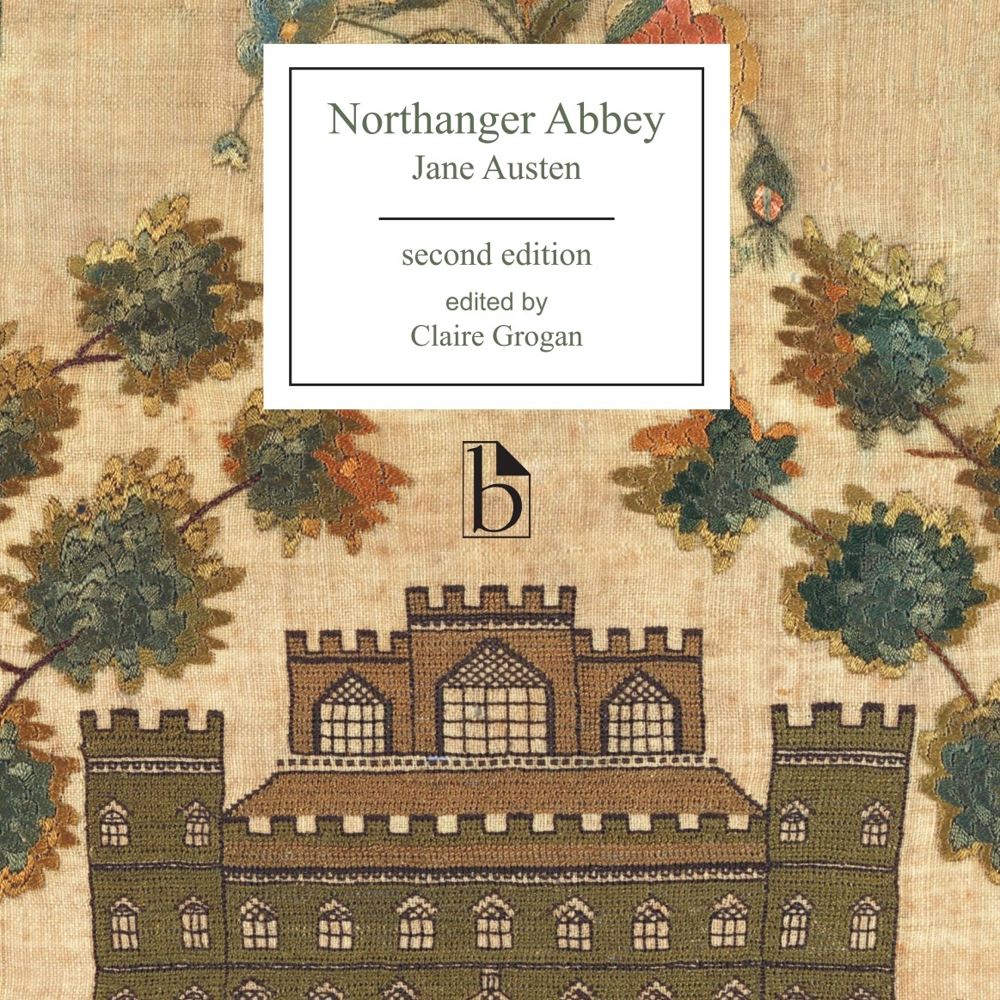

 Jane Austen
One of my favorite hobbies is reading and I have loved it since I was a child. I have always been a huge fan of 19th century
literature. I appreciated most of the novels that I had to read while in high school and learned to love various types
of writing. Some of my favorite authors are Jane Austen, Charlotte Bronte, Elizabeth Gaskell, Ray Bradbury, and Franz Kafka.
My favorite books that I've read numerous times are Persuasion by Jane Austen, The Bell Jar by Sylvia Plath, and Fahrenheit 451 by Ray Bradbury.
Video Games
Call of Duty
I have always enjoyed video games as well. From the time when I was a little girl, they provided a way for me to spend
time with my dad and brother growing up, but to also connect with my kids and husband as well. I think they are a great
way to unwind and relax, but to also challenge yourself as well. I like that they can be played with others and even
enjoyed alone.
Movies
While You Were Sleeping
I have always loved to watch movies for a long as I can remember. I remember spending many hours in video rental stores,
especially Blockbuster, trying to find that perfect movie to watch on a Friday night. Movies have always found a way to
help me get through many hard times as they enable me to find a place to get away for a little while without having to focus
on much. They also can make you think and see the world around you in different ways.
Experience
Career
I've worked in medical billing in one way or another since I graduated high school in 2003. I began working
in a doctors office and assisted patients while billing insurance companies. I also performed many other activities
in the office from coding to answering phones to taking payments. After that I worked for a company that represented
many doctors across the United States doing the pathology billing. I recently began a new job on the other side of
medical billing field and am learning how to process claims.
Accomplishments
After I graduated high school, it took several tries for me to get my first associate degree as I married too young
initially and dropped out of school. I eventually had my daughter and decided to go back for computer programming.
I went through a divorce and ended up getting my Associate degree rather than my Bachelor's Degree.
I feel as though this was an accomplishment though because I refused to quit even
though I was going through a difficult time. I was able to raise a small child alone while working full time and
going back to school. It was several years after that I was able to meet the love of my life and create a beautiful
blended family. Now, my husband and I are raising three kids together while working and going to school. I know
that I can accomplish anything to support my family with my family supporting me.
Computers
I have not held a programming or IT type job yet in my career yet. I hope to be able to find something in the near
future, especially after I graduate. I have always loved working with computers and creating anything that I could
with them. Every job I've held has related to computers in one way or another and I've learned new systems and programs.
I've also trained others on computers and spent a lot of time improving processes and creating documentation to use
the computer for novices and experienced users alike. I think my future will be in computers much like my present is and my
past has been.